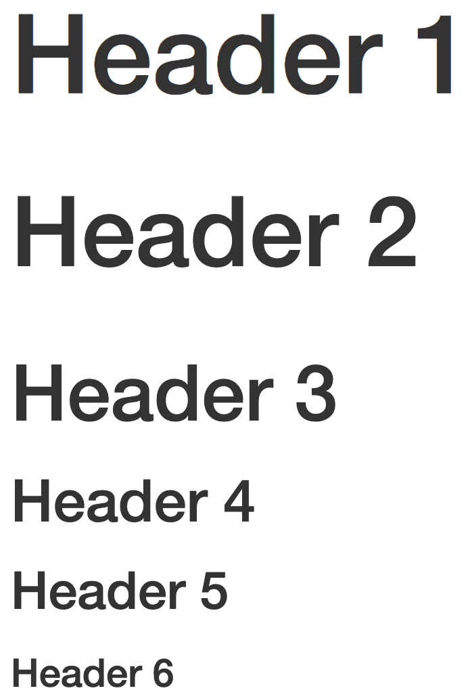
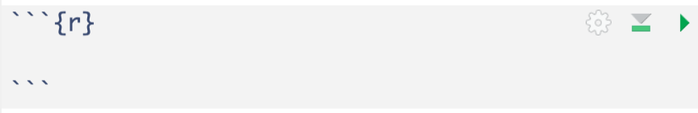

Part 2: Quarto Introduction
2025-07-17
Basic Quarto example

1. Create a Quarto file (.qmd)
Two options:
- click on File \(\rightarrow\) New File \(\rightarrow\) Quarto Document…\(\rightarrow\) OK,
- or in upper left corner of RStudio click on
 \(\rightarrow\)
\(\rightarrow\) 


Pop-up window selections:
- Enter a title and your name
- Select
HTMLoutput format (default) - Engine: select
Knitr - Editor: Select
Use visual markdown editor - Click
Create

2. Create a Quarto file (.qmd)
- After clicking on
Create, you should then see the following in your editor window:

3. Save the Quarto file (.qmd)
- Save the file by
- selecting
File -> Save, - or clicking on
 (towards the left above the scripting window),
(towards the left above the scripting window), - or keyboard shortcut
- PC: Ctrl + s
- Mac: Command + s
- selecting
- You will need to specify
- a filename to save the file as
- ALWAYS use .qmd as the filename extension for Quarto files
- the folder to save the file in
- a filename to save the file as
4. Create (render) html file
We create the html file by rendering the .qmd file.
Two options:
- Click on the Render icon
 at the top of the editor window,
at the top of the editor window,
- Or use keyboard shortcuts
- Mac: Command+Shift+K
- PC: Ctrl+Shift+K
- A new window will open with the html output.
- You will now see both .qmd and .html files in the folder where you saved the .qmd file.
Note
- The template .qmd file that RStudio creates will render to an html file by default.
- The output format can be changed to create a Word doc, pdf, slides, etc.
.qmd file vs. its html output
.qmd file
html output

Formatting text
bold, italics, superscripts & subscripts,
strikethrough,verbatim, etc.
Text is formatted through a markup language called
Markdown(Wikipedia)- Other markup languages include html (webapges) and LaTeX (math)
- All text formatting is specified via code
- “Markdown is a plain text format that is designed to be easy to write, and, even more importantly, easy to read” 1
Newer versions of RStudio include a
Visual editoras well that makes formatting text similar to using a word processor.

Formatting text: Visual editor
- Using the
Visual editoris similar to using a wordprocessor, such as Word - Keyboard shortcuts usually work as well (shown for Mac below)

Headers
- Organize your documents using headers to create sections and subsections
- Use
#at the beginning of the line to create headers
Text in editor:

Output:

Important
Make sure there is no space before the #, and there IS a space after the # in order for the header to work properly.
Outline of headers in RStudio
- You can easily navigate through your .qmd file if you use headers to outline your text.
- Click on the Outline button below the Run button to see the outline.

Images (1/2)
Add an image with a simple 

You can add html image options to change the width or height:
Specifying width in terms of pixels:
Specifying height in inches:
Specifying width as a percent of the original image size:
Images (2/2)
Add captions, links, and align
- Add caption text (& align left):

- Add caption text that is linked to OHSU webpage (& align center):
{target="_blank"}]
(/images/ohsu_logo.jpg){width="100" fig-alt="OHSU Logo" fig-align="center"}- Logo image itself is linked to OHSU webpage (& align right):
[{width="100" fig-alt="OHSU Logo"
fig-align="right"}](https://www.ohsu.edu){target="_blank"}
Code chunks
.qmd file
html output
What does a code chunk look like?
An empty code chunk looks like this:
Visual editor

Source editor

Important
Note that a code chunks start with ```{r} and ends with ```. Make sure there is no space before ```.
Enter and run code (1/2)
- Type R code inside code chunks
- Select code you want to run, by
- placing the cursor in the line of code you want to run,
- or highlighting the code you want to run
- Run selected code by
- clicking on the button in the top right corner of the scripting window and choosing
Run Selected Line(s), - or typing one of the following key combinations:
- clicking on the button in the top right corner of the scripting window and choosing
| Mac | ctrl + return |
| PC | command + return |
- Where does the output appear?

Enter and run code (2/2)
- Run all code in a chunk by
- by clicking the play button in the top right corner of the chunk
- The code output appears below the code chunk

Note
- The output should also appear in the Console.
- Settings can be changed so that the output appears only in the Console and not below the code chunk:
- Select (to right of Render button) and then Chunk Output in Console.
Create a code chunk
3 options to create a code chunk
Click on
 at top right of the editor window, or
at top right of the editor window, orKeyboard shortcut
| Mac | Command + Option + I |
| PC | Ctrl + Alt + I |
Visual editor: SelectInsert->Executable Cell->R

Code chunk options
evaldetermines whether the R code is run or not.- The default is
true. - When set to
false, the code is not run but still displayed in the output:
echodetermines whether the R code is displayed or not.- The default is
true. When set tofalse, the code is not displayed in the output but the output is (ifevalis set totrue):

warning: do you want R’s warnings include in your output?message: do you want R’s messages include in your output?
For a complete list of options, see the Quarto reference page for Code Cells: Knitr. In particular the sections on Code Output and Cell Output.
- Usually you want most of your document to have the same code chunk options.
- You can set these options in the YAML of the Quarto file (next topic!).
Simple YAML example
- The default YAML includes a title and author that appear at the top of the output file. In the example below, I also added in a date option
YAML:
Output:

Important
- The YAML must start and end with 3 dashes
---. - The first set of
---must be on the very first line.
Change the output file type
- The YAML specifies the format of the output file:
- html, Word, pdf, slides, website, book, etc.
- This is done by changing the
format:option